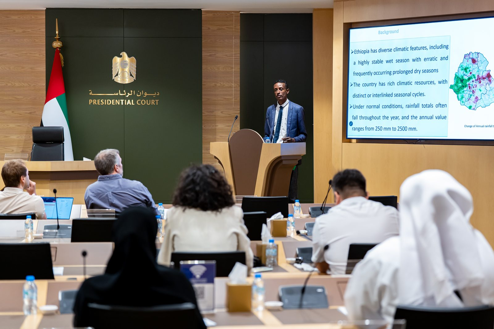
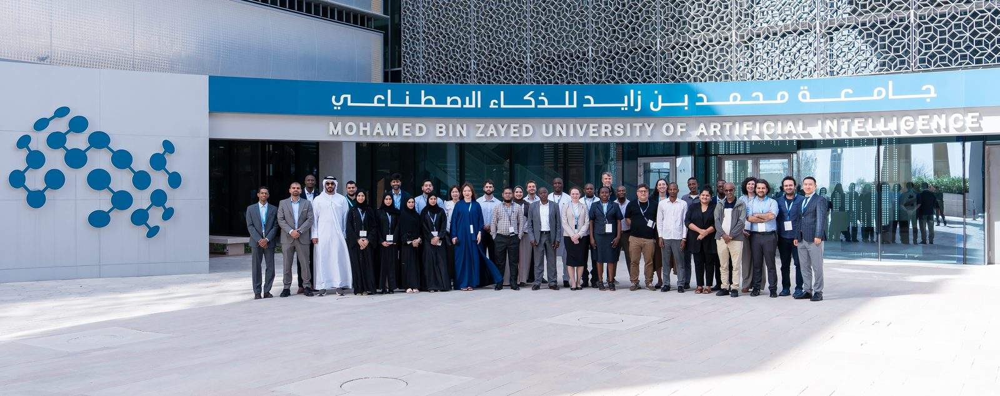
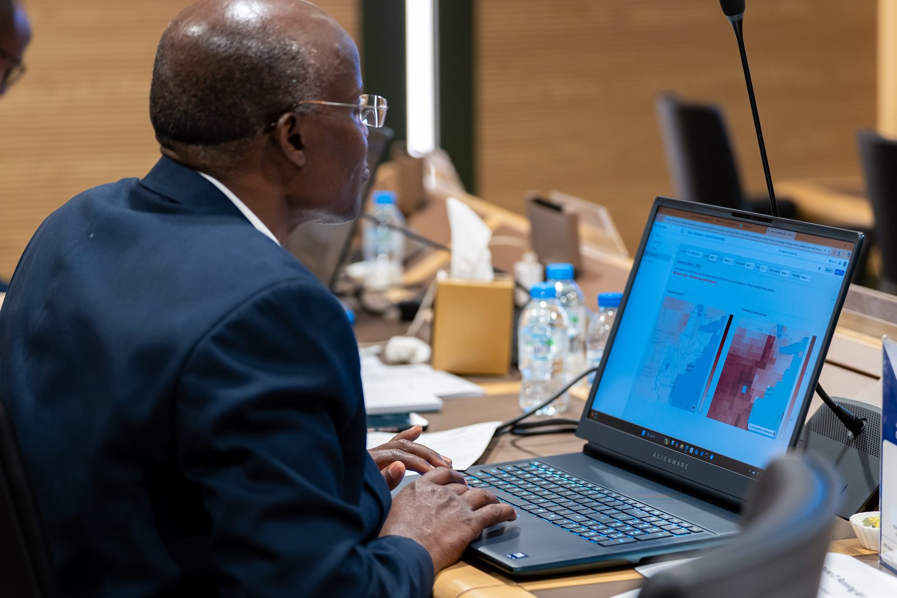
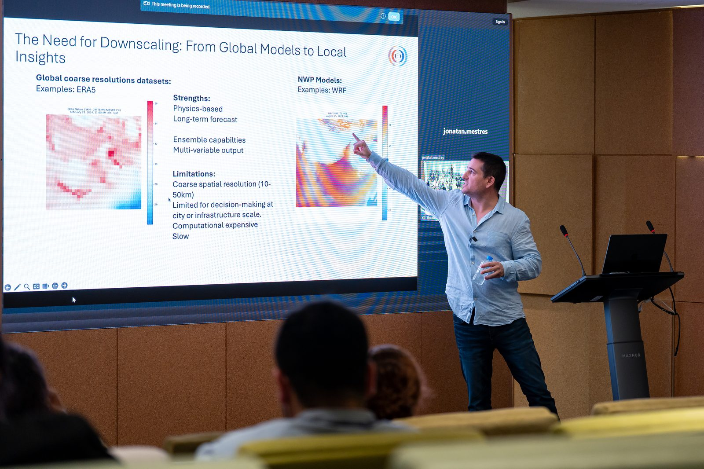
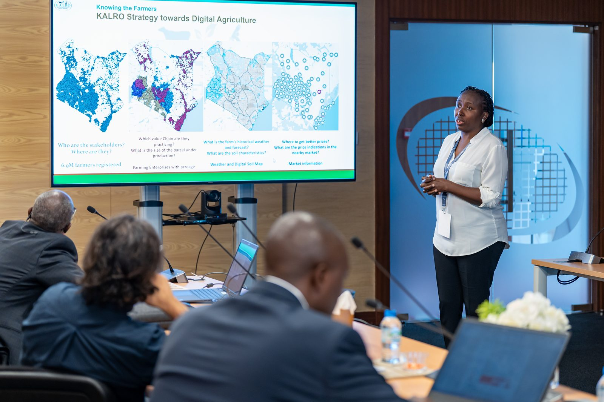
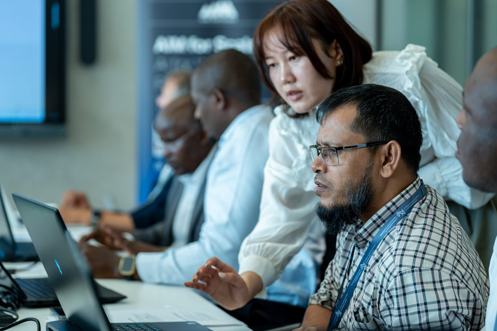

The 2025 program brought together meteorologists and agricultural specialists from six countries to work through the full AI-forecasting workflow — from running models to designing farmer-facing services.
🎬 Highlights from the 2025 program in Abu Dhabi — press play to watch.
Coverage of the 2025 program from the partner institutions.






Specialists from NCM, WMO, ECMWF, MET Norway, G42, Google, TAHMO, Rhiza Research, AfriClimate AI and others joined the 2025 program.
Twenty meteorologists and agricultural specialists from six countries, across the Weather and Agriculture tracks.